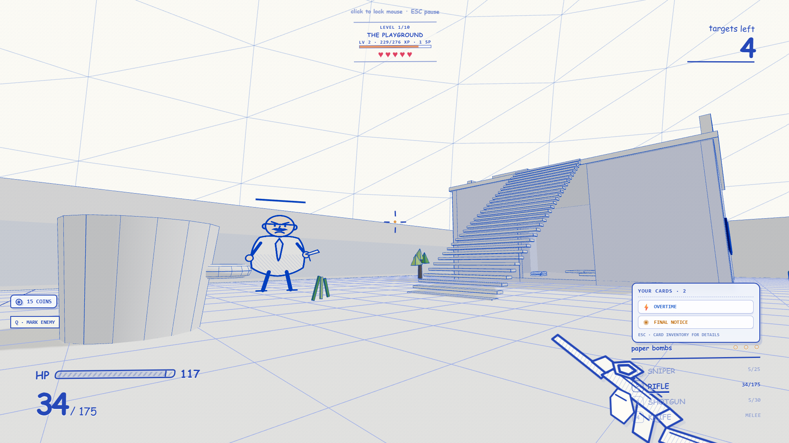
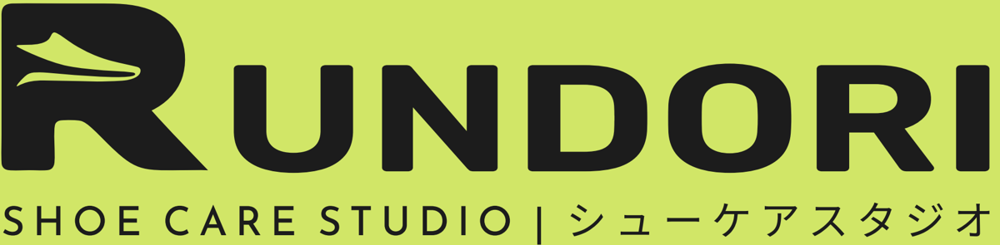
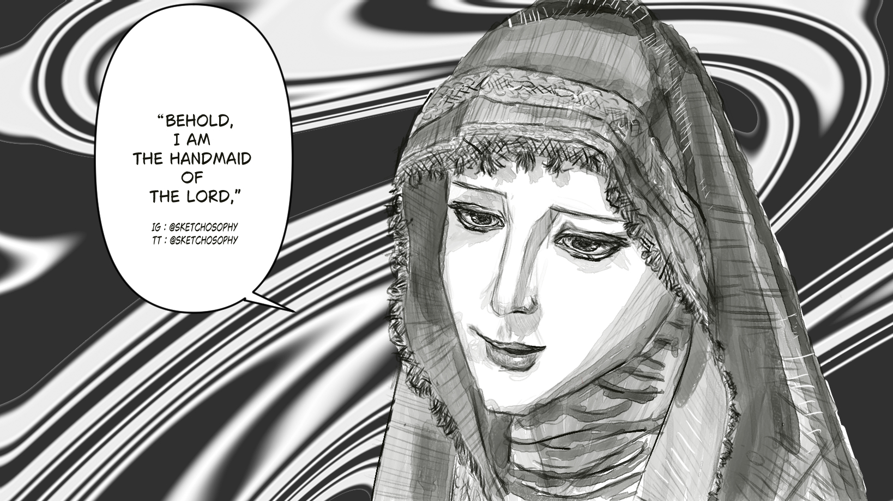
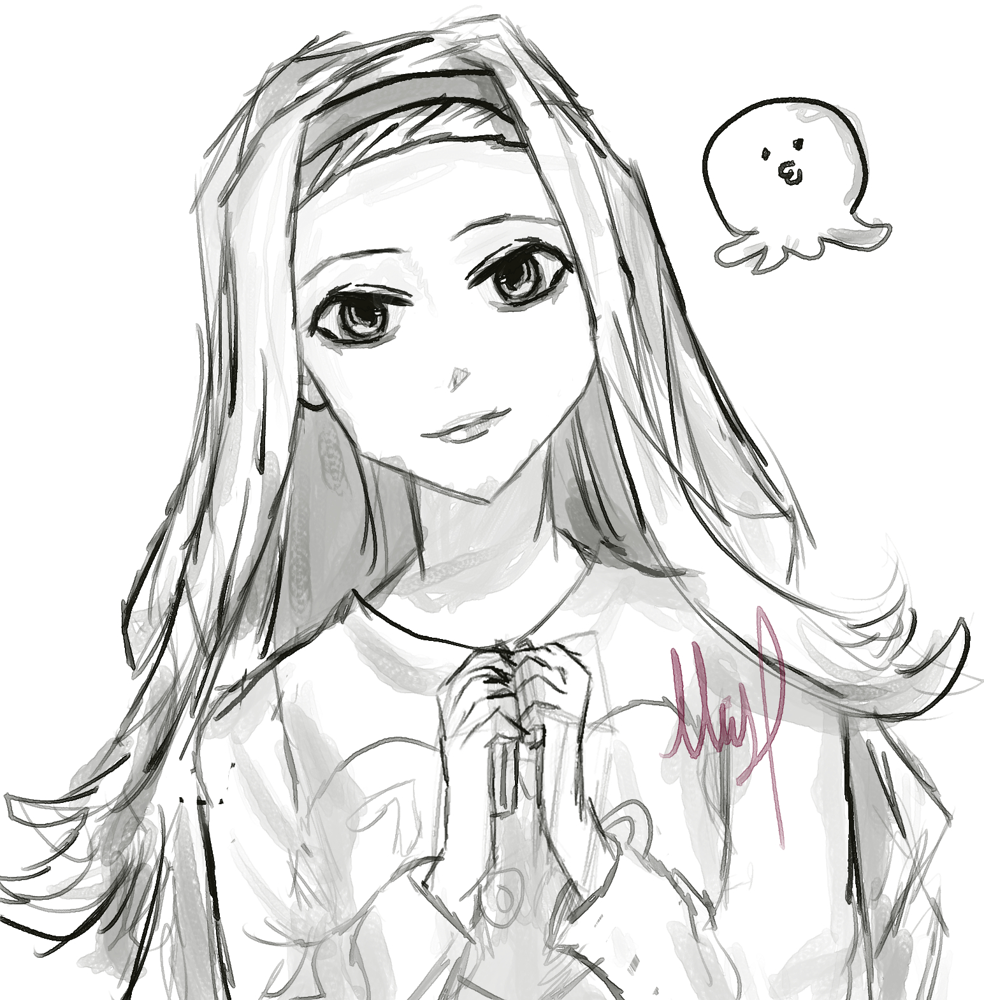
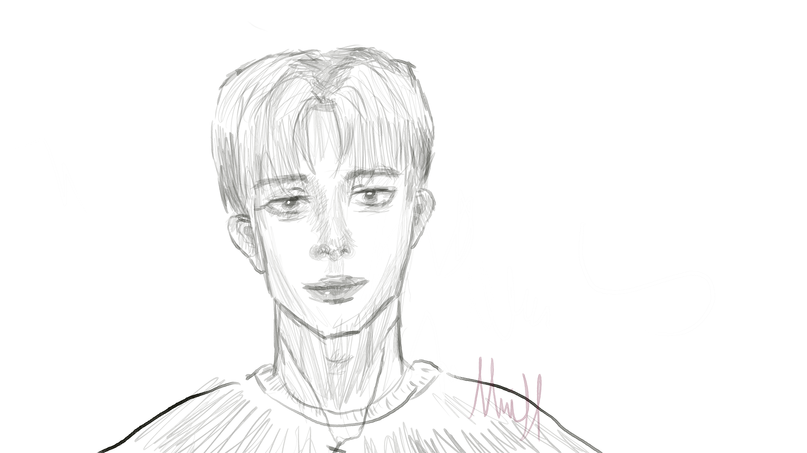

SAKIKO ↗
First-person horror · Windows
Creative developer
Interactive multimedia

Explore project ↗An office worker’s notebook dream becomes a first-person campaign against paperwork monsters.
First-person horror · Windows
Physics puzzle · Android + browser
Finance + habit app · Android
Notebook-style FPS · Browser
Exploration + restaurant game · In development

Staff order management + private receipts
Digital illustration and drawings on paper.

Digital illustration · Clip Studio Paint

Digital drawing · Clip Studio Paint

Traditional drawing · Paper and pen
About / Medianto Susilo
I’m Medi, a creative developer focused on interactive multimedia. I make games, software, interfaces and artwork.
I study Computer Science at BINUS University in Jakarta, specializing in Interactive Multimedia. My interests include visual art, guitar, music production, songwriting and games.
Jakarta, Indonesia